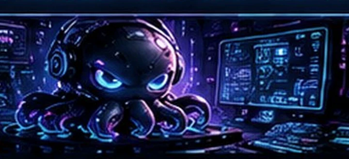
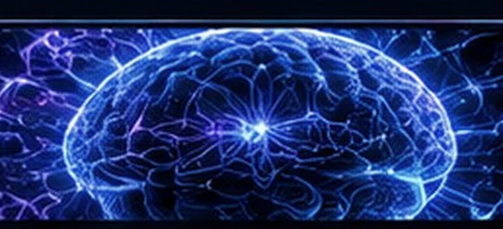
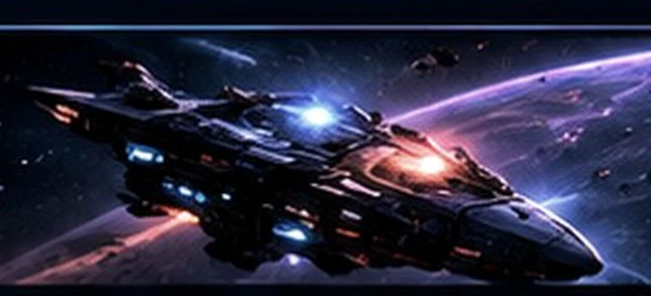
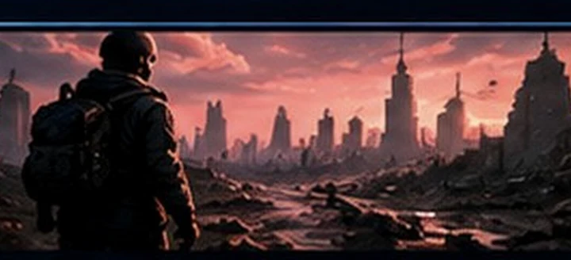
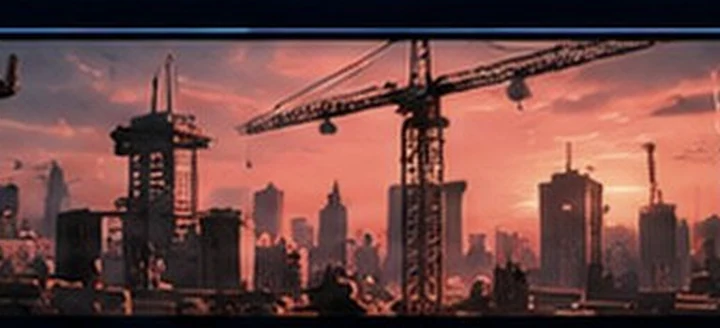

01 / AI SYSTEMDESENVOLVIMENTO ASSISTIDO
KRAKEN Code
Ambiente desktop de programação assistida e integração de ferramentas de IA.
VER REPOSITÓRIO ↗Repositório privado: exige permissão.Inteligência artificial, sistemas neurais e experiências 3D. Projetos de software criados para explorar o limite entre tecnologia e imaginação.
Cinco frentes de desenvolvimento — arte conceitual utilizada apenas como apresentação, não como captura dos aplicativos.

01 / AI SYSTEMDESENVOLVIMENTO ASSISTIDO
Ambiente desktop de programação assistida e integração de ferramentas de IA.
VER REPOSITÓRIO ↗Repositório privado: exige permissão.
02 / NEURAL LABPESQUISA EXPERIMENTAL
Arquiteturas neurais, memória, agentes e experimentação com aprendizado.

03 / SPACE SIMMUNDO ESPACIAL PROCEDURAL
Exploração espacial e sistemas gráficos próprios desenvolvidos em C#.

04 / SURVIVALSIMULAÇÃO & SOBREVIVÊNCIA
Mundo persistente, NPCs autônomos, facções e sistemas emergentes.
VER REPOSITÓRIO ↗Repositório privado: exige permissão.
05 / OPERATIONSSISTEMAS OPERACIONAIS
Ferramentas de gestão para obras, estoque, operações e processos.
Explore as ideias e a arquitetura dos projetos. As imagens ilustram conceitos e não reproduzem funcionamento real.
Ferramentas utilizadas em diferentes experimentos, jogos e plataformas.
Python · Ollama · SNN · Memória · Automação
Godot · GDScript · Three.js · OpenGL · C++
C# · .NET · TypeScript · React · Node.js
Conheça os projetos, tecnologias e experimentos em desenvolvimento.
ACESSAR GITHUB ↗